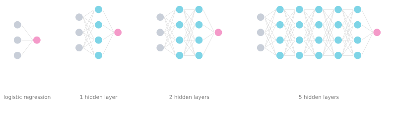
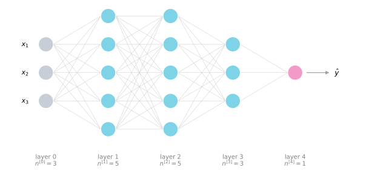
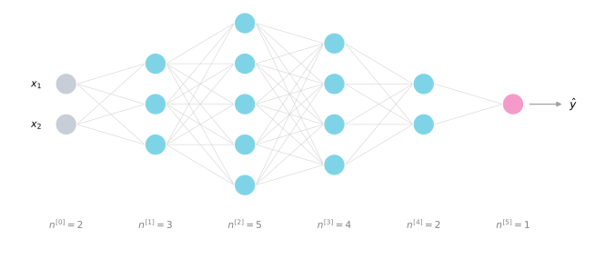
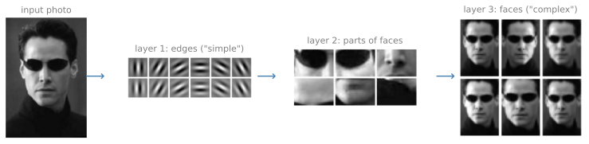
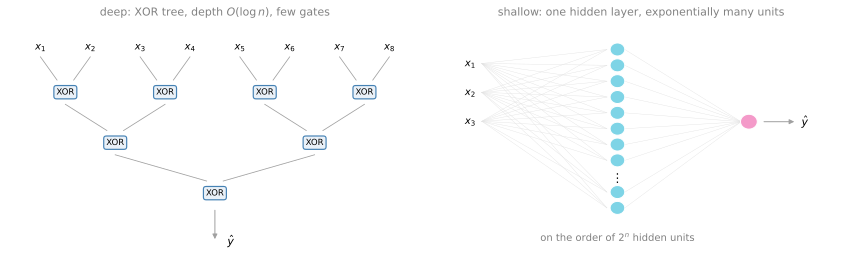

Deep L-Layer Networks
deep-learning
neural-networks
forward-propagation
notation
Notation for deep neural networks, forward propagation layer by layer, dimension checking for W, b, Z, and A, and why depth helps.
By now you have seen forward propagation and backpropagation in the context of a neural network with a single hidden layer, as well as logistic regression, and you have learned about vectorization and when it is important to initialize the weights randomly. If you have done the labs, you have also implemented and seen these ideas work for yourself. So you have actually seen most of the ideas you need to implement a deep neural network. This page and the next one take those ideas and put them together, so that you will be able to implement your own deep neural network.
Deep L-Layer Neural Networks
So what is a deep neural network? You have seen the picture for logistic regression and you have also seen neural networks with a single hidden layer. The figure below adds two more examples, a neural network with two hidden layers and one with five hidden layers.
We say that logistic regression is a very shallow model, whereas the model on the right is a much deeper model. Shallow versus deep is a matter of degree. A neural network with a single hidden layer is a 2 layer neural network (remember that when we count layers, we do not count the input layer, just the hidden layers and the output layer). A 2 layer network is still quite shallow, but not as shallow as logistic regression, which is technically a one layer neural network. Over the last several years the machine learning community has realized that there are functions that very deep neural networks can learn that shallower models are often unable to (the last section of this page builds some intuition for why).
Although for any given problem it might be hard to predict in advance exactly how deep a network you would want, it is reasonable to try logistic regression, then one and then two hidden layers, and view the number of hidden layers as another hyperparameter that you could try a variety of values of and evaluate on cross validation data, or on your development set (more about these terms in the second course).
Notation
Let us now go through the notation used to describe deep neural networks. Here is a four layer neural network with three hidden layers, and the number of units in these hidden layers is 5, 5, 3, followed by one output unit.

- Capital \(L\) denotes the number of layers in the network. In this case \(L = 4\).
- \(n^{[l]}\) denotes the number of nodes, or units, in layer \(l\). Indexing the input as layer 0, here \(n^{[1]} = 5\) (five hidden units), \(n^{[2]} = 5\), \(n^{[3]} = 3\), and \(n^{[4]} = n^{[L]} = 1\) output unit. For the input layer, \(n^{[0]} = n_x = 3\).
- \(a^{[l]}\) denotes the activations in layer \(l\). In forward propagation you end up computing \(a^{[l]} = g^{[l]}(z^{[l]})\), where the activation function \(g\) may also be indexed by the layer.
- \(W^{[l]}\) denotes the weights for computing the value \(z^{[l]}\) in layer \(l\), and similarly \(b^{[l]}\) is the bias used to compute \(z^{[l]}\).
- The input features are called \(x\), but \(x\) is also the activations of layer 0, so \(a^{[0]} = x\).
- The activation of the final layer is the prediction, \(a^{[L]} = \hat{y}\).
That is the notation to describe and compute with deep networks. It is a lot of symbols in one place, but each one has appeared before on the shallow network pages; the only new pieces are \(L\) and \(n^{[l]}\).
Review Questions
1. In the deep network notation, what do \(L\), \(n^{[l]}\), and \(a^{[l]}\) each denote?
TipAnswer
\(L\) is the number of layers in the network (hidden layers plus the output layer, not counting the input layer). \(n^{[l]}\) is the number of units in layer \(l\), with \(n^{[0]} = n_x\) for the input layer. \(a^{[l]}\) is the vector of activations of layer \(l\), with \(a^{[0]} = x\) and \(a^{[L]} = \hat{y}\).
1. Why is logistic regression called a one layer neural network, and how many layers does a network with one hidden layer have?
TipAnswer
The input layer is not counted, so logistic regression, which goes straight from inputs to one output unit, has one counted layer. A network with one hidden layer has two, the hidden layer and the output layer. Shallow versus deep is a matter of degree.
1. How should you choose the number of hidden layers for a new problem?
TipAnswer
It is hard to predict in advance. Treat the depth as a hyperparameter. Try logistic regression, then one and two hidden layers, and evaluate the options on cross validation or development data.
1. Consider a network with three input features, three hidden layers, and one output unit. How many layers does this network have?
- The number of layers \(L\) is 5. The number of hidden layers is 4.
- The number of layers \(L\) is 4. The number of hidden layers is 4.
- The number of layers \(L\) is 3. The number of hidden layers is 3.
- The number of layers \(L\) is 4. The number of hidden layers is 3.
TipAnswer
d. The number of layers is counted as the number of hidden layers plus 1 for the output layer. The input layer is not counted, and neither the input nor the output layer counts as hidden.
Forward Propagation in a Deep Network
Let us see how to perform forward propagation in a deep network, first for a single training example \(x\), and then for the vectorized version that carries out forward propagation on the entire training set at the same time.
Given a single training example \(x\), the first layer computes
\[ z^{[1]} = W^{[1]} x + b^{[1]} \qquad a^{[1]} = g^{[1]}\big(z^{[1]}\big) \]
where \(W^{[1]}\) and \(b^{[1]}\) are the parameters that affect the activations in layer 1, and the activation function \(g\) is indexed by the layer, since different layers can use different activation functions. Layer 2 is the same computation fed by layer 1’s output,
\[ z^{[2]} = W^{[2]} a^{[1]} + b^{[2]} \qquad a^{[2]} = g^{[2]}\big(z^{[2]}\big) \]
and so on and so forth, until you get to the output layer, layer 4 in the network above,
\[ z^{[4]} = W^{[4]} a^{[3]} + b^{[4]} \qquad a^{[4]} = g^{[4]}\big(z^{[4]}\big) = \hat{y} \]
Notice that since the input feature vector \(x\) is also the activations of layer 0, we can replace \(x\) with \(a^{[0]}\) in the first pair of equations, and then all of these equations look the same. The general rule is, for \(l = 1, \ldots, L\),
\[ z^{[l]} = W^{[l]} a^{[l-1]} + b^{[l]} \qquad a^{[l]} = g^{[l]}\big(z^{[l]}\big) \]
Vectorizing Across the Training Set
How about doing this in a vectorized way for the whole training set at the same time? The equations look quite similar. Recall that the capital matrices stack the per-example vectors in columns, the \(z\) vector of the first training example, the \(z\) vector of the second, and so on, and that \(X = A^{[0]}\), the training examples stacked left to right. Then for \(l = 1, \ldots, L\),
\[ Z^{[l]} = W^{[l]} A^{[l-1]} + b^{[l]} \qquad A^{[l]} = g^{[l]}\big(Z^{[l]}\big) \]
with \(A^{[0]} = X\), and at the end \(\hat{Y} = A^{[L]}\), the predictions on all the training examples stacked horizontally.
If you look at this implementation, it requires a for loop over the layers, computing the activations for layer 1, then layer 2, then layer 3, then layer 4. When implementing neural networks we usually want to get rid of explicit for loops, but this is one place where there is no way around one. When implementing forward propagation, it is perfectly okay to have a for loop that runs from 1 through \(L\), the total number of layers in the network.
If the pieces so far look familiar, that is because they are. Forward propagation in a deep network takes exactly the computation from the network with a single hidden layer and just repeats it more times.
Review Questions
1. Write the general forward propagation equations for layer \(l\), for a single example and vectorized.
TipAnswer
Single example: \(z^{[l]} = W^{[l]} a^{[l-1]} + b^{[l]}\) and \(a^{[l]} = g^{[l]}(z^{[l]})\), with \(a^{[0]} = x\). Vectorized: \(Z^{[l]} = W^{[l]} A^{[l-1]} + b^{[l]}\) and \(A^{[l]} = g^{[l]}(Z^{[l]})\), with \(A^{[0]} = X\).
1. Forward propagation in a deep network uses an explicit for loop. Is that a problem?
TipAnswer
No. The loop runs over the layers, from \(l = 1\) to \(L\), and there is no way to implement forward propagation without it. The rule of avoiding explicit for loops applies to loops over training examples and features, which vectorization removes, not to the loop over layers.
Getting Your Matrix Dimensions Right
When implementing a deep neural network, one of the most useful debugging tools for checking the correctness of the code is to pull out a piece of paper and work through the dimensions of the matrices systematically. Here is a network to practice on, with \(L = 5\), four hidden layers and one output layer.

Dimensions of W and b
Start with the first step of forward propagation, \(z^{[1]} = W^{[1]} x + b^{[1]}\), and ignore the bias for a moment. The first hidden layer has three hidden units, so \(z^{[1]}\) is a \(3 \times 1\) vector, or more generally \(n^{[1]} \times 1\). The input \(x\) has two features, so it is \(2 \times 1\), or \(n^{[0]} \times 1\). What we need is for \(W^{[1]}\) to be a matrix that turns an \(n^{[0]} \times 1\) vector into an \(n^{[1]} \times 1\) vector. By the rules of matrix multiplication, that has to be a \(3 \times 2\) matrix, because a \(3 \times 2\) matrix times a \(2 \times 1\) vector gives a \(3 \times 1\) vector. This is the paper-and-pencil habit to build, writing the shape under every factor,
\[ \underbrace{z^{[1]}}_{(3,\,1)} = \underbrace{W^{[1]}}_{(3,\,2)} \; \underbrace{x}_{(2,\,1)} + \underbrace{b^{[1]}}_{(3,\,1)} \]
or in general,
\[ \underbrace{z^{[1]}}_{(n^{[1]},\,1)} = \underbrace{W^{[1]}}_{(n^{[1]},\,n^{[0]})} \; \underbrace{x}_{(n^{[0]},\,1)} + \underbrace{b^{[1]}}_{(n^{[1]},\,1)} \]
So \(W^{[1]}\) is \(n^{[1]} \times n^{[0]}\), and the general formula is
\[ W^{[l]} : \big(n^{[l]}, \; n^{[l-1]}\big) \]
Check it against the figure with the same trick. \(z^{[2]} = W^{[2]} a^{[1]} + b^{[2]}\) needs to turn a \(3 \times 1\) vector into a \(5 \times 1\) vector, so \(W^{[2]}\) had better be \(5 \times 3\), which is indeed \(n^{[2]} \times n^{[1]}\),
\[ \underbrace{z^{[2]}}_{(5,\,1)} = \underbrace{W^{[2]}}_{(5,\,3)} \; \underbrace{a^{[1]}}_{(3,\,1)} + \underbrace{b^{[2]}}_{(5,\,1)} \]
Similarly \(W^{[3]}\) is \(4 \times 5\), \(W^{[4]}\) is \(2 \times 4\), and \(W^{[5]}\) is \(1 \times 2\), in each case the dimension of the next layer by the dimension of the previous layer.
Now the bias vector \(b^{[l]}\). In \(z^{[1]} = W^{[1]} x + b^{[1]}\), the product \(W^{[1]} x\) is \(3 \times 1\), and you have to add a \(3 \times 1\) vector to it to get a \(3 \times 1\) output, so \(b^{[1]}\) is \(3 \times 1\). In layer 2 the product is \(5 \times 1\), so \(b^{[2]}\) is \(5 \times 1\). The general rule is
\[ b^{[l]} : \big(n^{[l]}, \; 1\big) \]
And when implementing backpropagation, the dimensions of the derivatives match their variables, so \(dW^{[l]}\) has the same dimension as \(W^{[l]}\), and \(db^{[l]}\) the same as \(b^{[l]}\).
Dimensions of z, a, and the Vectorized Z, A
The other key quantities to check are \(z^{[l]}\), \(a^{[l]}\), and \(x\). Since \(a^{[l]} = g^{[l]}(z^{[l]})\) is applied element-wise, \(z\) and \(a\) always have the same dimension, \(n^{[l]} \times 1\) for a single example.
In a vectorized implementation, the dimensions of \(W\), \(b\), \(dW\), and \(db\) stay the same, but the dimensions of \(Z\), \(A\), and \(X\) change. Instead of \(z^{[1]}\) being \(n^{[1]} \times 1\), the matrix \(Z^{[1]}\) stacks the \(z^{[1](i)}\) vectors of the individual examples in columns, so it is \(n^{[1]} \times m\). Similarly \(X\) goes from \(n^{[0]} \times 1\) to \(n^{[0]} \times m\). The multiplication checks out. An \((n^{[1]}, n^{[0]})\) matrix times an \((n^{[0]}, m)\) matrix gives an \((n^{[1]}, m)\) matrix, as expected.
One final detail. \(b^{[1]}\) is still \(n^{[1]} \times 1\), but when you add it, Python broadcasting duplicates it into an \(n^{[1]} \times m\) matrix and adds element-wise. Written with the shapes under the factors, the vectorized first layer is
\[ \underbrace{Z^{[1]}}_{(n^{[1]},\,m)} = \underbrace{W^{[1]}}_{(n^{[1]},\,n^{[0]})} \; \underbrace{X}_{(n^{[0]},\,m)} + \underbrace{b^{[1]}}_{(n^{[1]},\,1) \,\to\, (n^{[1]},\,m)} \]
To summarize, with the \(l = 0\) special case being the input itself,
\[ Z^{[l]}, A^{[l]} : \big(n^{[l]}, \; m\big) \qquad A^{[0]} = X : \big(n^{[0]}, \; m\big) \]
In backpropagation, \(dZ^{[l]}\) and \(dA^{[l]}\) have the same dimensions as \(Z^{[l]}\) and \(A^{[l]}\). When you implement a deep network, working through your code and making sure all the matrix dimensions are consistent eliminates a whole class of possible bugs.
Review Questions
1. What are the dimensions of \(W^{[l]}\) and \(b^{[l]}\) in an \(L\) layer network?
TipAnswer
\(W^{[l]}\) is \((n^{[l]}, n^{[l-1]})\), the number of units in layer \(l\) by the number of units in the previous layer. \(b^{[l]}\) is \((n^{[l]}, 1)\). The derivatives \(dW^{[l]}\) and \(db^{[l]}\) have the same dimensions as \(W^{[l]}\) and \(b^{[l]}\).
1. For the 5 layer example with \(n^{[0]} = 2, n^{[1]} = 3, n^{[2]} = 5, n^{[3]} = 4, n^{[4]} = 2, n^{[5]} = 1\), what are the shapes of \(W^{[3]}\) and \(b^{[4]}\)?
TipAnswer
\(W^{[3]}\) is \((n^{[3]}, n^{[2]}) = (4, 5)\), and \(b^{[4]}\) is \((n^{[4]}, 1) = (2, 1)\).
1. Which dimensions change between the single-example and the vectorized implementation, and which stay the same?
TipAnswer
The parameters \(W^{[l]}\), \(b^{[l]}\) (and \(dW^{[l]}\), \(db^{[l]}\)) stay the same. The activations change: \(z^{[l]}\) and \(a^{[l]}\) go from \((n^{[l]}, 1)\) to \(Z^{[l]}\) and \(A^{[l]}\) of shape \((n^{[l]}, m)\), and \(x\) goes from \((n^{[0]}, 1)\) to \(X = A^{[0]}\) of shape \((n^{[0]}, m)\). The \(b^{[l]}\) vector is broadcast across the \(m\) columns when added.
1. Why do \(z^{[l]}\) and \(a^{[l]}\) always have the same dimension?
TipAnswer
Because \(a^{[l]} = g^{[l]}(z^{[l]})\) applies the activation function element-wise, producing one activation per entry of \(z^{[l]}\).
1. Consider a 2 hidden layer network with four input features \(x_1, \ldots, x_4\), 3 units in the first hidden layer, 4 units in the second hidden layer, and one output unit. Which of the following statements are true? (Check all that apply.)
- \(W^{[2]}\) will have shape \((4, 3)\)
- \(W^{[1]}\) will have shape \((3, 4)\)
- \(b^{[1]}\) will have shape \((1, 3)\)
- \(b^{[1]}\) will have shape \((3, 1)\)
- \(W^{[1]}\) will have shape \((4, 3)\)
- \(b^{[1]}\) will have shape \((4, 1)\)
- \(W^{[2]}\) will have shape \((3, 4)\)
- \(W^{[2]}\) will have shape \((1, 3)\)
TipAnswer
a, b, and d. Apply the general rules \(W^{[l]} : (n^{[l]}, n^{[l-1]})\) and \(b^{[l]} : (n^{[l]}, 1)\) with \(n^{[0]} = 4\), \(n^{[1]} = 3\), \(n^{[2]} = 4\). So \(W^{[1]}\) is \((3, 4)\), \(b^{[1]}\) is \((3, 1)\), and \(W^{[2]}\) is \((4, 3)\). The other options flip the dimensions or use the wrong layer sizes.
1. Whereas the previous question used a specific network, what is the dimension of \(W^{[l]}\), the weight matrix associated with layer \(l\), in the general case?
- \(W^{[l]}\) has shape \((n^{[l+1]}, n^{[l]})\)
- \(W^{[l]}\) has shape \((n^{[l-1]}, n^{[l]})\)
- \(W^{[l]}\) has shape \((n^{[l]}, n^{[l+1]})\)
- \(W^{[l]}\) has shape \((n^{[l]}, n^{[l-1]})\)
TipAnswer
d. \(W^{[l]}\) turns the previous layer’s \(n^{[l-1]}\) activations into this layer’s \(n^{[l]}\) values, so by the rules of matrix multiplication its shape must be \((n^{[l]}, n^{[l-1]})\).
1. Assume the values for \(n^{[l]}\) are stored in an array called layer_dims, as follows: layer_dims = [n_x, 4, 3, 2, 1]. So layer 1 has four hidden units, layer 2 has 3 hidden units, and so on. Which of the following for-loops will allow you to initialize the parameters for the model?
for i in range(len(layer_dims)-1):
parameter['W' + str(i+1)] = np.random.randn(layer_dims[i+1], layer_dims[i]) * 0.01
parameter['b' + str(i+1)] = np.random.randn(layer_dims[i+1], 1) * 0.01for i in range(1, len(layer_dims)/2):
parameter['W' + str(i)] = np.random.randn(layer_dims[i], layer_dims[i-1]) * 0.01
parameter['b' + str(i)] = np.random.randn(layer_dims[i], 1) * 0.01for i in range(len(layer_dims)):
parameter['W' + str(i+1)] = np.random.randn(layer_dims[i+1], layer_dims[i]) * 0.01
parameter['b' + str(i+1)] = np.random.randn(layer_dims[i+1], 1) * 0.01for i in range(len(layer_dims)-1):
parameter['W' + str(i+1)] = np.random.randn(layer_dims[i], layer_dims[i+1]) * 0.01
parameter['b' + str(i+1)] = np.random.randn(layer_dims[i+1], 1) * 0.01
TipAnswer
a. It iterates over \(i = 0, 1, 2, 3\) and assigns to each \(W^{[i+1]}\) the shape \((n^{[i+1]}, n^{[i]})\), which is exactly \((n^{[l]}, n^{[l-1]})\), and to each \(b^{[i+1]}\) the shape \((n^{[i+1]}, 1)\). Option b loops over only half the layers, option c runs one index past the end of the array, and option d builds \(W\) with the dimensions flipped.
Why Deep Representations?
We have all been hearing that deep neural networks work really well for a lot of problems, and it is not just that they need to be big, it is that specifically they need to be deep, to have a lot of hidden layers. Why is that? Let us go through a couple of examples to gain some intuition.
Simple to Complex, Layer by Layer
First, what is a deep network computing? If you are building a system for face recognition, here is what a deep neural network could be doing. You input a picture of a face. The first layer of the network can be thought of as a feature detector or edge detector, with different hidden units trying to figure out where edges of different orientations are in the image (each edge detector looks at a relatively small region of the image). The next layers can then group the detected edges together to form parts of faces, one neuron trying to find an eye, a different neuron trying to find part of a nose. And finally, by putting together different parts of faces, an eye, a nose, an ear, a chin, the later layers can try to recognize or detect different types of faces, looking at much larger areas of the image than the early edge detectors did.

The photo is the same LFW People image used in the machine learning course’s face recognition discussion. The panels are illustrative rather than learned. The edge patterns are idealized oriented filters, and the parts and faces panels are crops and downsampled variants of the photo, showing the kind of pattern each layer’s detectors respond to.
So intuitively, the earlier layers of the network detect simple functions, like edges, and the later layers compose them together to learn more and more complex functions. (These per-unit visualizations will make more sense when convolutional networks come up in a later course.)
This simple-to-complex hierarchical or compositional representation applies to other types of data too. If you are building a speech recognition system, the first level of the network might learn to detect low level audio waveform features, is the tone going up or down, is it white noise, what is the pitch. Composing those, the network can learn to detect basic units of sound, called phonemes in linguistics (in the word “cat,” the C, the A, and the T are each a phoneme). Composing those, it can recognize words, and composing words, entire phrases or sentences. The early layers compute what seem like relatively simple functions of the input, and by the time you are deep in the network, surprisingly complex things, detecting faces, words, phrases.
Some people like to make an analogy between deep networks and the human brain, where neuroscientists believe the brain also starts off detecting simple things like edges before building up to more complex objects. Analogies between deep learning and the brain are sometimes a little dangerous, but there is some truth to this picture, and it has served as loose inspiration (more on the brain at the end of the next page).
Circuit Theory Intuition
The other piece of intuition comes from circuit theory, which studies what functions you can compute with logic gates (AND, OR, NOT). Informally, there are functions that a relatively small but deep network can compute, small meaning the number of hidden units is relatively small, that a shallow network needs exponentially more hidden units to match.
Here is one example. Say you are trying to compute the exclusive OR, the parity, of all your input features,
\[ y = x_1 \oplus x_2 \oplus x_3 \oplus \cdots \oplus x_n \]
With a deep arrangement, you build an XOR tree. Compute \(x_1 \oplus x_2\) and \(x_3 \oplus x_4\), then XOR those results together, and so on up the tree until one node outputs the parity \(\hat{y}\).

To compute the XOR this way, the depth of the network is on the order of \(\log n\), and the number of gates is not that large. But if you are not allowed multiple hidden layers, if you are forced to compute this function with just one hidden layer feeding the output, then that hidden layer needs to be exponentially large. Essentially it must exhaustively enumerate the \(2^n\) possible configurations of the input bits that make the parity 1 or 0 (technically it can be done with \(2^{n-1}\) hidden units, still exponential in the number of bits).
So there are mathematical functions that are much easier to compute with deep networks than with shallow ones. (Honestly, this circuit theory result is less useful for building intuition than the hierarchy picture, but it is one of the results people often cite when explaining the value of deep representations.)
Branding, and Practical Advice
To be perfectly honest, one more reason the term “deep learning” has taken off is just branding. Neural networks with a lot of hidden layers rebranded as deep learning is a great phrase, it is just so deep, and once the term caught on it captured the popular imagination. But regardless of the PR, deep networks do work well.
Sometimes people go overboard and insist on tons of hidden layers. When starting on a new problem, it is often best to start with logistic regression, then try one or two hidden layers, and treat the number of layers as a hyperparameter to tune, in order to find the right depth for your network. Over the last several years, though, there has been a trend toward finding that for some applications very deep networks, sometimes with many dozens of layers, can be the best model for the problem.
Review Questions
1. In the face recognition example, what do the early, middle, and late layers of the network detect?
TipAnswer
The early layers act as edge detectors, finding edges of different orientations in small regions of the image. The middle layers compose edges into parts of faces, like an eye or part of a nose. The late layers compose parts into whole faces, looking at much larger areas of the image. Simple features compose into progressively more complex ones.
1. What is the analogous simple-to-complex hierarchy for speech?
TipAnswer
Low level waveform features (tone going up or down, white noise, pitch), then phonemes (the basic units of sound, like the C, A, T in “cat”), then words, then phrases and sentences.
1. What does the circuit theory result say about computing the parity \(x_1 \oplus x_2 \oplus \cdots \oplus x_n\)?
TipAnswer
With a deep XOR tree the function needs only on the order of \(\log n\) depth and relatively few gates. Forced into a single hidden layer, the network needs on the order of \(2^n\) hidden units (technically \(2^{n-1}\)), exponentially many, because it must enumerate all input configurations. Some functions are simply much easier to compute deep than shallow.
1. Deep networks are powerful, so should you always start a new problem with a very deep model?
TipAnswer
No. Start with logistic regression, then try one or two hidden layers, and tune the depth as a hyperparameter. Very deep networks are sometimes the best model, but the depth should be found empirically, not assumed.
1. Which of the following statements is true?
- The earlier layers of a neural network are typically computing more complex features of the input than the deeper layers.
- The deeper layers of a neural network are typically computing more complex features of the input than the earlier layers.
TipAnswer
b. Early layers detect simple features, like edges, and deeper layers compose them into progressively more complex ones, like parts of faces and then whole faces.
1. There are certain functions with the following properties. (i) To compute the function using a shallow network circuit, you will need a large network (where we measure size by the number of logic gates in the network), but (ii) to compute it using a deep network circuit, you need only an exponentially smaller network. True or False?
TipAnswer
True. The parity function is the standard example. A deep XOR tree computes it with depth on the order of \(\log n\) and few gates, while a single hidden layer needs on the order of \(2^n\) units.